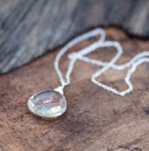

Quartz is our most common mineral. Quartz is made of the two most abundant chemical elements on Earth: oxygen and
silicon.
Atoms of oxygen and silicon join together as tetrahedrons (three sided pyramids). These stack together to build
crystals. Billions of tetrahedrons are needed to build even a small crystal.